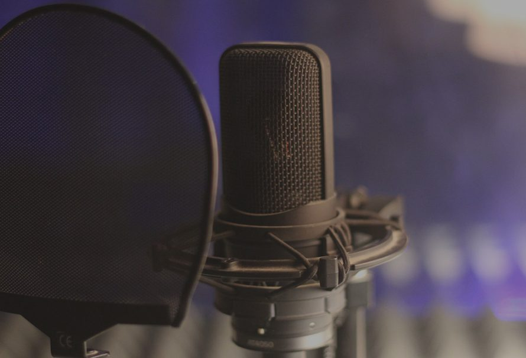
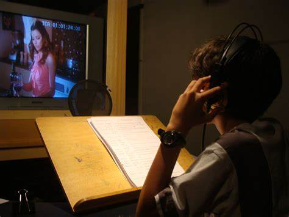

História da Dublagem no Brasil:
A dublagem no Brasil começou na década de 1930, quando uma lei obrigou a tradução dos filmes para o português. Inicialmente feita com legendas, a dublagem surgiu para tornar o conteúdo acessível ao público, especialmente aos analfabetos. Os primeiros estúdios, como o Labo Cinédia, pioneiro no Rio de Janeiro, deram início a essa arte, que evoluiu com estúdios renomados como Herbert Richers.
Na década de 1960, a televisão ampliou o mercado, levando séries e desenhos estrangeiros às casas brasileiras. Isso consolidou vozes marcantes que se tornaram estrelas mesmo sem aparecer nas telas. A dublagem brasileira se destacou por adaptar piadas, expressões e sotaques regionais, ganhando reconhecimento mundial.
Com a tecnologia e o streaming, a demanda por dubladores cresceu, mantendo o Brasil como um dos maiores consumidores de conteúdo dublado. A dublagem é a arte de emocionar, ensinar e conectar pessoas, dando vida a personagens que fazem parte da nossa história.Como e feito a dublagem?
A dublagem começa com a tradução do roteiro, que não é feita palavra por palavra, mas adaptada para que as falas soem naturais e caibam no tempo dos movimentos da boca dos personagens.
Depois, os dubladores assistem às cenas e gravam suas vozes em estúdio, tentando sincronizar as falas com os movimentos labiais. Eles também precisam transmitir as emoções e características do personagem, fazendo com que a voz pareça viva e real.
Após a gravação, o áudio é editado para ajustar o tempo e corrigir possíveis erros. Depois, as vozes são misturadas com a música e os efeitos sonoros para criar o som final do filme ou série.
Assim, a dublagem permite que pessoas que não falam o idioma original aproveitem o conteúdo com facilidade e mais emoção.